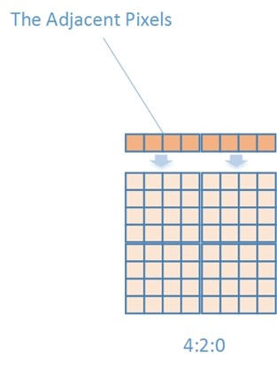
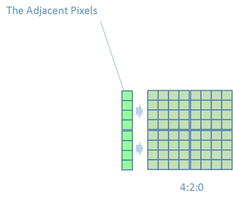
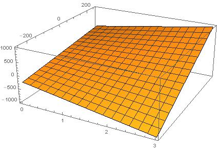
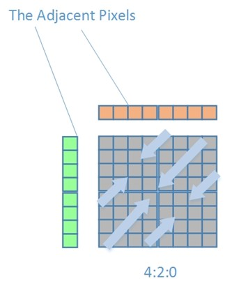

正文
- h.264的POC计算
- 指数哥伦布编码
- h.264加权预测
- h.264码率控制
- h.264直接预测
- h.264 FMO
- h.264参考图像列表、解码图像缓存
- h.264 mvp求解过程
- UMHexagonS搜索过程
- h.264全搜索以及快速全搜索算法
- h.264 率失真优化
- EPZS搜索过程
- Intra Chroma Prediction
- Intra Luma Prediction
- H.264 Transform
- H.264 Quantization
- Quantization Method
- h.264 Mode Decision
- h.264 Bi-Predictive Motion Search
- h.264语法结构分析
- h.264宏块与子宏块类型
- h.264 scanning process for transform coefficients
- CAVLC
- CABAC
- 算术编码JM实现
- h.264并行解码算法分析
- h.264 去块滤波
- h.264并行解码算法2D-Wave实现（基于多核非共享内存系统）
- h.264并行解码算法2D-Wave实现（基于多核共享内存系统）
- h.264并行解码算法3D-Wave实现（基于多核共享内存系统）
- h.264并行熵解码
- CABAC总结与补充讨论
- ffmpeg h264并行解码
- ffmpeg h.264解码所用的主要缓冲区介绍

帧内预测依赖于当前宏块的相邻宏块，如果任何一个相邻宏块不可用，那么会直接影响到当前宏块的预测方式。
那么宏块怎么才谓之可用？
满足以下几个条件的相邻宏块为不可用：
相邻宏块超出边界，即（x<0 || x>PicWidthInMbs），（y<0 || y>PicHeightInMbs）
相邻宏块与当前处理的宏块不在同一slice
如果强制要求当前宏块的相邻宏块为intra（constrained_intra_pred_flag = 1），但实际上相邻宏块的编码方式为inter，该相邻宏块就不可用。
当然以上只适用于判断相邻宏块是否可用于intra预测；而对于inter预测，只要判断条件1与2；而在进行deblocking的情况下只需判断条件1。
（以下的”可用”都为”可用于Intra预测”）
Intra Chroma Prediction
帧内色度预测有四种预测模式。
1 . Intra_Chroma_DC
DC模式会选取相邻Chroma宏块的相应像素，取像素平均值来预测当前4x4块的像素值。由于预测块大小为4x4，因此相邻块像素值也取四个为一组：
$\begin{align*}
Sum_{up} &=\sum_{x=0}^{3}Pixel(x,-1)\
Sum_{left} &=\sum_{y=0}^{3}Pixel(-1,y)\
Sum_{default} &=1<<(BitDepth-1)
\end{align*}$
DC模式分为三种情况
1)如果当前Chroma子块（4x4）的位置位于宏块的(0,0)或者(x,y){x!=0 && y!=0}，那么该Chroma子块就可以使用与其位置相应的相邻宏块的像素进行预测。
如果Top与Left可用$Pred_{4\times4}(x,y) = (Sum_{up} + Sum_{left})>>3$
否则如果只有Top或者只有Left可用$ Pred_{4\times4}(x,y)=Sum_{up} >>2$ or $Pred_{4\times4}(x,y)=Sum_{left}>>2$
否则Top与Left都不可用$Pred_{4\times4}(x,y)=Sum_{default}$
2)如果当前Chroma子块的位置位于(x,-1)
如果Top可用$ Pred_{4\times4}(x,y)=Sum_{up} >>2$
否则如果left可用$Pred_{4\times4}(x,y)=Sum_{left}>>2$
否则$Pred_{4\times4}(x,y)=Sum_{default}$
3)如果当前Chroma子块的位置位于(-1,y)
如果left可用$Pred_{4\times4}(x,y)=Sum_{left}>>2$
否则如果Top可用$ Pred_{4\times4}(x,y)=Sum_{up} >>2$
否则$Pred_{4\times4}(x,y)=Sum_{default}$
2 . Intra Chroma Horizon
只有当左相邻宏块的像素点Pixel(-1,y)被标记为可以用于帧内预测时才能采用这种预测方式
$Pred(x,y)=Pixel(-1,y)$

3 . Intra Chroma Vertical
只有当上方相邻宏块的像素点Pixel(x,-1)被标记为可以用于帧内预测时才能采用这种预测方式
$Pred(x,y)=Pixel(x,-1)$

4 . Intra Chroma Plane
只有当左相邻宏块像素点Pixel(-1,y)以及上方相邻宏块像素点Pixel(x,-1)都被标记为可以用于Intra预测时才能采用这种预测方式
首先我们来看标准中的两个式子
$\begin{align*}
H&=\sum_{x=0}^{3+xCF}(x+1)\times{(Pixel(4+xCF+x,-1)-Pixel(2+xCF-x,-1))}\
V&=\sum_{y=0}^{3+yCF}(y+1)\times{(Pixel(-1,4+yCF+y)-Pixel(-1,2+yCF-y))}
\end{align*}$
由于xCF与yCF是YUV格式相关参数，当为0时表示为4:2:0
$\begin{align*}
H&=\sum_{x=0}^{3}(x+1)\times{(Pixel(4+x,-1)-Pixel(2-x,-1))}\
V&=\sum_{y=0}^{3}(y+1)\times{(Pixel(-1,4+y)-Pixel(-1,2-y))}
\end{align*}$
我们在这里令$M= Pixel(4+x,-1)-Pixel(2-x,-1)$，令x为x轴，M为y轴，H为z轴，得到以下图像

可以看出在x越大的情况下（趋向于宏块两端），如果M（两端像素差）越大，那么得到的值也就越大，因此该参数H表明了Pixel(x,-1)的变化趋势，是变大呢（H值很大），变小呢（H值为负，很小），还是平缓（H值在0附近）。
同理，V在y轴上也是这种情况。
按照上面的说法，这就是一个线性系数，那么我们就可以把H与V做一下调整，归一化得到线性系数b与c
$\begin{align*}
b &= (34+29\times{H})>>6 \
c &= (34+29\times{V})>>6
\end{align*}$
得到系数后，再确定常量（基准值）就可以得到一个完整的式子了。那么如何确定基准值？这里假设像素是按照左下->右上的方式变化的，即像素值在该方向上线性变化。

那么取中心点为基准值，该基准值为左相邻宏块的最低端与上相邻宏块最右端的平均值
$Pred(3,3)=(Pixel(width-1,-1)+Pixel(-1,height-1))>>1$
$a =16\times{(Pixel(width-1,-1)+Pixel(-1,height-1))}$
最后得到预测公式
$Pred(x,y)=(a+b\times{(x-3-xCF)}+c\times{(y-3-yCF)}+16)>>5$
JM18.6
/*!
- \brief
- Intra prediction of the chrminance layers of one macroblock
*/
void intra_chroma_prediction (Macroblock *currMB, int *mb_up, int mb_left, intmb_up_left)
{
int s, i, j;
int uv;
int b8, b4;
imgpel vline[16];
int mb_available_up;
int mb_available_left[2];
int mb_available_up_left;
PixelPos pix_c; //!< pixel position p(0,-1)
PixelPos pix_d;
PixelPos pix_a; //!< pixel positions p(-1, -1..15)
Slice *currSlice = currMB->p_Slice;
VideoParameters *p_Vid = currSlice->p_Vid;
InputParameters *p_Inp = currSlice->p_Inp;
int cr_MB_x = p_Vid->mb_cr_size_x;
int cr_MB_y = p_Vid->mb_cr_size_y;
imgpel **cur_pred = NULL;
imgpel *hline = NULL;
int yuv = p_Vid->yuv_format - 1;
int dc_pred_value_chroma = p_Vid->dc_pred_value_comp[1];
int max_imgpel_value_uv = p_Vid->max_pel_value_comp[1];
static const int block_pos[3][4][4]= //[yuv][b8][b4]
{
{ {0, 1, 2, 3},{0, 0, 0, 0},{0, 0, 0, 0},{0, 0, 0, 0}},
{ {0, 1, 2, 3},{2, 3, 2, 3},{0, 0, 0, 0},{0, 0, 0, 0}},
{ {0, 1, 2, 3},{1, 1, 3, 3},{2, 3, 2, 3},{3, 3, 3, 3}}
};
p_Vid->getNeighbour(currMB, -1, -1, p_Vid->mb_size[IS_CHROMA], &pix_d);
p_Vid->getNeighbour(currMB, -1, 0, p_Vid->mb_size[IS_CHROMA], &pix_a);
p_Vid->getNeighbour(currMB, 0, -1, p_Vid->mb_size[IS_CHROMA], &pix_c);
mb_available_up = pix_c.available;
mb_available_up_left = pix_d.available;
mb_available_left[0] = mb_available_left[1] = pix_a.available;
//强制要求相邻宏块使用帧内预测,否则不可用
if(p_Inp->UseConstrainedIntraPred)
{
mb_available_up = pix_c.available ? p_Vid->intra_block[pix_c.mb_addr] : 0;
mb_available_left[0] = mb_available_left[1] = pix_a.available ? p_Vid->intra_block[pix_a.mb_addr] : 0;
mb_available_up_left = pix_d.available ? p_Vid->intra_block[pix_d.mb_addr] : 0;
}
if (mb_up)
*mb_up = mb_available_up;
if (mb_left)
*mb_left = mb_available_left[0];
if (mb_up_left)
*mb_up_left = mb_available_up_left;
// compute all chroma intra prediction modes for both U and V
for (uv=0; uv<2; uv++)
{
imgpel **image = p_Vid->enc_picture->imgUV[uv];
imgpel ***curr_mpr_16x16 = currSlice->mpr_16x16[uv + 1];
// DC prediction
for(b8=0; b8<p_Vid->num_blk8x8_uv >> 1;b8++)
{
for (b4 = 0; b4 < 4; b4++)
{
int block_y = subblk_offset_y[yuv][b8][b4];
int block_x = subblk_offset_x[yuv][b8][b4];
int blk_x = block_x;
s = dc_pred_value_chroma;
//===== get prediction value =====
switch (block_pos[yuv][b8][b4])
{
case 0: //===== TOP LEFT =====
{
int s0 = 0, s2 = 0;
if (mb_available_up)
{
int pos_x = pix_c.pos_x + blk_x;
int pos_y = pix_c.pos_y;
for (i = 0; i < BLOCK_SIZE; i++)
s0 += image[pos_y][pos_x++];
}
if (mb_available_left[0])
{
int pos_x = pix_a.pos_x;
int pos_y = pix_a.pos_y + block_y;
for (i = 0; i < BLOCK_SIZE;i++)
s2 += image[pos_y++][pos_x];
}
if (mb_available_up && mb_available_left[0])
s = (s0 + s2 + 4) >> 3;
else if (mb_available_up)
s = (s0 + 2) >> 2;
else if (mb_available_left[0])
s = (s2 + 2) >> 2;
}
break;
case 1: //===== TOP RIGHT =====
{
int s1 = 0, s2 = 0;
if (mb_available_up)
{
int pos_x = pix_c.pos_x + blk_x;
int pos_y = pix_c.pos_y;
for (i = 0; i < BLOCK_SIZE; i++)
s1 += image[pos_y][pos_x++];
}
else if (mb_available_left[0])
{
int pos_x = pix_a.pos_x;
int pos_y = pix_a.pos_y + block_y;
for (i = 0; i < BLOCK_SIZE; i++)
s2 += image[pos_y++][pos_x];
}
if (mb_available_up)
s = (s1 +2) >> 2;
else if (mb_available_left[0])
s = (s2 +2) >> 2;
}
break;
case 2: //===== BOTTOM LEFT =====
if (mb_available_left[0])
{
int pos_x = pix_a.pos_x;
int pos_y = pix_a.pos_y + block_y;
int s3 = 0;
for (i = 0; i < BLOCK_SIZE; i++)
s3 += image[pos_y++][pos_x];
s = (s3 + 2) >> 2;
}
else if (mb_available_up)
{
int pos_x = pix_c.pos_x + blk_x;
int pos_y = pix_c.pos_y;
int s0 = 0;
for (i = 0; i < BLOCK_SIZE; i++)
s0 += image[pos_y][pos_x++];
s = (s0 + 2) >> 2;
}
break;
case 3: //===== BOTTOM RIGHT =====
{
int s1 = 0, s3 = 0;
if (mb_available_up)
for (i=blk_x;i<(blk_x+4);i++)
s1 += image[pix_c.pos_y][pix_c.pos_x + i];
if (mb_available_left[0])
{
int pos_x = pix_a.pos_x;
int pos_y = pix_a.pos_y + block_y;
for (i = 0; i < BLOCK_SIZE;i++)
s3 += image[pos_y++][pos_x];
}
if (mb_available_up && mb_available_left[0])
s = (s1 + s3 + 4) >> 3;
else if (mb_available_up)
s = (s1 + 2) >> 2;
else if (mb_available_left[0])
s = (s3 + 2) >> 2;
}
break;
}
//===== prediction =====
cur_pred = curr_mpr_16x16[DC_PRED_8];
for (j = block_y; j < block_y+4; j++)
{
for (i = block_x; i < block_x+4; i++)
{
cur_pred[j][i] = (imgpel) s;
}
}
}
}
// vertical prediction
if (mb_available_up)
{
cur_pred = curr_mpr_16x16[VERT_PRED_8];
hline = &image[pix_c.pos_y][pix_c.pos_x];
for (j=0; j<cr_MB_y; j++)
memcpy(cur_pred[j], hline, cr_MB_x * sizeof(imgpel));
}
// horizontal prediction
if (mb_available_left[0])
{
int pos_x = pix_a.pos_x;
int pos_y = pix_a.pos_y;
cur_pred = curr_mpr_16x16[HOR_PRED_8];
for (i=0; i<cr_MB_y; i++)
vline[i] = image[pos_y++][pos_x];
for (j=0; j<cr_MB_y; j++)
{
int predictor = vline[j];
for (i = 0; i < cr_MB_x; i++)
cur_pred[j][i] = (imgpel) predictor;
}
}
// plane prediction
if (mb_available_left[0] && mb_available_up && mb_available_up_left)
{
int cr_x = (cr_MB_x >> 1);
int cr_y = (cr_MB_y >> 1);
int iaa, iv, ib, ic;
int ih = cr_x * (hline[cr_MB_x-1] - image[pix_d.pos_y][pix_d.pos_x]);
for (i = 0; i < cr_x - 1; i++)
ih += (i + 1)*(hline[cr_x + i] - hline[cr_x - 2 - i]);
iv = cr_y * (vline[cr_MB_y-1] - image[pix_d.pos_y][pix_d.pos_x]);
for (i = 0; i < cr_y - 1; i++)
iv += (i + 1) * (vline[cr_y + i] - vline[cr_y - 2 - i]);
if (cr_MB_x == 8)
ib = (17 * ih + 2 * cr_MB_x) >> 5;
else
ib = ( 5 * ih + 2 * cr_MB_x) >> 6;
if (cr_MB_y == 8)
ic = (17 * iv + 2 * cr_MB_y) >> 5;
else
ic = ( 5 * iv + 2 * cr_MB_y) >> 6;
iaa = 16 * (hline[cr_MB_x - 1] + vline[cr_MB_y - 1]);
cur_pred = curr_mpr_16x16[PLANE_8];
iaa += (1 - cr_x) * ib + (1 - cr_y) * ic;
for (j = 0; j < cr_MB_y; j++)
for (i = 0; i < cr_MB_x; i++)
cur_pred[j][i]= (imgpel) iClip1( max_imgpel_value_uv, (iaa + i * ib + j * ic + 16)>>5);
}
}
if (!p_Inp->rdopt) // the rd-opt part does not work correctly (see encode_one_macroblock)
{ // since ipredmodes could be overwritten => encoder-decoder-mismatches
currSlice->rdo_low_intra_chroma_decision(currMB, mb_available_up, mb_available_left, mb_available_up_left);
}
}
欧长坤 © 2016-2025 版权所有， 采用知识共享署名-非商业性使用-禁止演绎 4.0 国际许可协议许可，代码使用 MIT 协议开源。
如果你认为本书对你起到了帮助，可以资助作者。